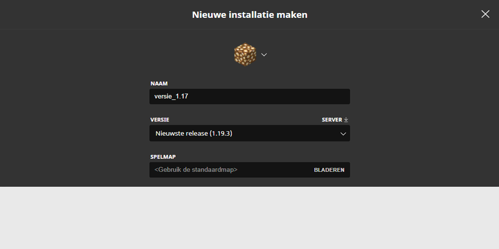
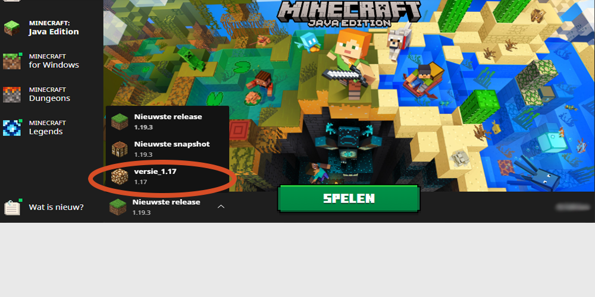

Minecraft launcher menu
Ga naar "Installations".

Installations menu
Klik op "nieuwe installatie".

Nieuwe installatie maken
Vul een naam in bij "NAAM" en klik op "VERSIE". Je kan ook een leuk icoontje kiezen als je wilt.

Kies de juiste versie
Klik op de balk onder "VERSIE".

Versie
Hier kies je de minecraft versie die je wilt. Onze server gebruikt op dit moment versie 1.17 .

Oplsaan
Slaag je gemaakte instellingen op.

Installatie lijst
Hier zie je al je de versies die je kan spelen. Zweef met je muis over de lijst voor meer opties. Ga naar "Spelen".

Versie wijzigen
Verander je versie naar de versie die je wilt spelen. De eerste keer dat je een versie laadt duurt het wat langer.

Versie 1.17
Wij nemen hier versie 1.17 .

Spelen
Klik op de groene knop met "SPELEN". Je bent nu klaar om minecraft te spelen op je gekozen versie.